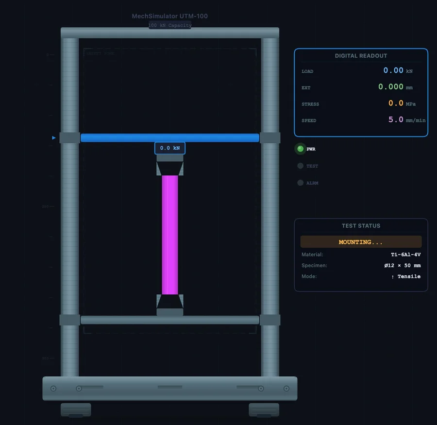
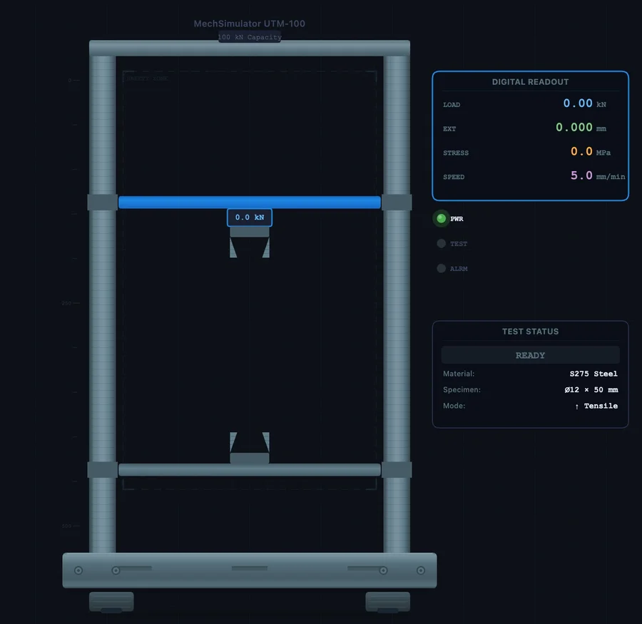

How to Test Custom Materials in the UTM Virtual Lab
Last reviewed June 2026
The eight built-in materials cover the essentials. But the moment a student opens a real datasheet — titanium, S275 structural steel, a ceramic substrate, a silicone seal — they need to go further. The + Custom button gives them exactly that: enter seven properties from any datasheet and run a full tensile or compression test in under two minutes.

- Click the dashed + Custom pill at the end of the material tabs, then enter seven datasheet values: name, Young's modulus (MPa), yield strength (MPa, use 0 for brittle materials), UTS (MPa), fracture strain, Poisson's ratio, and density (kg/m³).
- The simulator auto-classifies the stress-strain curve from three inputs — yield strength, modulus, and fracture strain — into one of five types: brittle, hyperelastic, very-ductile, ductile-yield, or ductile-gradual.
- Get fracture strain from a datasheet's % elongation divided by 100 (12% = 0.12); custom materials live in the current session only and reset on page refresh.
Finding the + Custom Button
Open the UTM Virtual Lab in Simulate mode. The material selector runs across the top: Mild Steel, Al 6061-T6, Cast Iron, Copper, Brass, HC Steel, Rubber, Glass — and then, at the far right, a dashed-border pill labelled + Custom.
Click it. A modal opens with seven input fields and a subtitle that adapts to your current unit system (SI or Imperial). All seven fields are mandatory — the simulator needs a complete picture of the material before it can build a curve. Fill them in, click Add Material, and your custom entry appears as a new tab alongside the presets, highlighted in purple. It behaves identically to any built-in material: you can mount a specimen, run tensile or compression, export CSV, and switch between SI and Imperial freely.
One thing worth noting before you start: the simulator only holds custom materials for the current browser session. There is no save mechanism. If you refresh, the custom tab disappears. The practical fix is to keep a small table of your seven values — re-entry takes about 90 seconds once you are used to the fields.
The Seven Fields — What Each One Means
Every field maps directly to a value you will find on a standard material datasheet. Here is what the simulator expects and why each property matters for the curve.
| Field | SI Unit | Valid Range | What it controls |
|---|---|---|---|
| Material Name | — | Max 20 characters | Label on the tab and chart |
| Young's Modulus (E) | MPa | 1 – 500 000 | Slope of the elastic (linear) region |
| Yield Strength (σy) | MPa | 0 – 5 000 | Start of plastic deformation; enter 0 for brittle materials |
| Ultimate Tensile Strength (UTS) | MPa | 1 – 5 000 | Peak of the curve; must exceed σy |
| Fracture Strain (εf) | — | 0.0001 – 10 | Total strain at fracture; controls ductility and curve width |
| Poisson's Ratio (ν) | — | 0.01 – 0.50 | Lateral contraction during loading; affects necking geometry |
| Density (ρ) | kg/m³ | 100 – 25 000 | Used when calculating specimen mass and force from stress |
Where to find fracture strain: Material datasheets list it as % elongation or elongation at break. Divide the percentage by 100: 12 % elongation becomes εf = 0.12. Ceramics and glasses typically sit below 0.002; structural steels between 0.15 and 0.30; pure copper and gold above 0.40.
Imperial unit entry: If the SI/Imperial toggle is set to Imperial when you open the modal, stress fields accept psi and density accepts lb/ft³. The simulator converts to SI internally — switching units after entry always displays the correct converted values.

How the Simulator Chooses the Curve Shape
You do not pick a curve type manually. The simulator reads three of your inputs — yield strength, Young's modulus, and fracture strain — and classifies the material into one of five behaviour modes. This happens the moment you click Add Material.
| Auto-detected type | Condition | Typical materials |
|---|---|---|
| Brittle | σy = 0 and εf < 0.01 | Glass, ceramics, concrete (tension), cast iron |
| Hyperelastic | σy = 0 and εf ≥ 1.0 | Natural rubber, silicone, elastomers |
| Very ductile | εf ≥ 0.35 | Pure copper, gold, lead, annealed metals |
| Ductile — distinct yield | E ≥ 150 000 MPa and εf ≥ 0.15 | Mild steel, structural steels (S275, S355) |
| Ductile — gradual yield | All other cases with σy > 0 | Aluminium alloys, titanium, high-strength steels |
The classification logic runs in priority order — brittle is checked first, hyperelastic second, and so on. For the gradual-yield and distinct-yield types the simulator also auto-derives the power-law hardening coefficient K and exponent n from your UTS and fracture strain, so the strain-hardening region between σy and UTS looks physically reasonable without you needing to supply those advanced constants.
This means you can simulate a material correctly by knowing only the seven basic properties — values any standard datasheet provides. You do not need to fit a Ramberg-Osgood model or enter K and n by hand.
Worked Example 1 — Titanium Ti-6Al-4V (Aerospace Grade)
Ti-6Al-4V is the most widely used titanium alloy — found in aircraft frames, medical implants, and motorsport components. It does not appear in the preset list, but its properties are straightforward to source from any aerospace material standard or the ASM Handbook.
Enter these values in the custom material modal:
| Field | Value |
|---|---|
| Material Name | Ti-6Al-4V |
| Young's Modulus (E) | 114 000 MPa |
| Yield Strength (σy) | 880 MPa |
| UTS | 950 MPa |
| Fracture Strain (εf) | 0.10 |
| Poisson's Ratio | 0.34 |
| Density | 4 430 kg/m³ |
What the simulator classifies it as: Because E = 114 000 MPa (below the 150 000 MPa threshold) and εf = 0.10 (below 0.35), it does not qualify as ductile-yield or very-ductile. σy > 0 rules out brittle and hyperelastic. Result: ductile-gradual — no sharp yield drop, smooth curve bending away from elastic linearity, gradual strain hardening to UTS at ε ≈ 0.065, then necking to fracture at ε = 0.10.
What to read from the result: Notice how the curve never shows the sharp yield plateau seen in mild steel. The 0.2 % offset construction would be needed to define σy experimentally — that is precisely why engineers use the offset method for titanium and aluminium alloys. The strength-to-density ratio stands out too: UTS 950 MPa at ρ = 4 430 kg/m³ versus mild steel at 400 MPa and 7 850 kg/m³ — titanium delivers more than twice the specific strength.
Once the test completes, export the CSV and read off the Young's modulus from the elastic slope, verify the UTS annotation, and note the elongation reported in the results panel. Then switch to the preset Al 6061-T6 and run the same test — the side-by-side mental comparison of two ductile-gradual materials with very different strength levels reinforces exactly why material selection matters in design.

Worked Example 2 — S275 Structural Steel (vs Mild Steel Preset)
S275 is the workhorse of structural engineering — universal beams, columns, plates. The preset Mild Steel in the simulator models a generic low-carbon steel (σy = 250 MPa, UTS = 400 MPa). S275 is slightly stronger. Entering it as a custom material lets students see exactly how a higher yield point shifts the curve while everything else stays the same class of behaviour.
| Field | Value |
|---|---|
| Material Name | S275 Steel |
| Young's Modulus (E) | 200 000 MPa |
| Yield Strength (σy) | 275 MPa |
| UTS | 430 MPa |
| Fracture Strain (εf) | 0.22 |
| Poisson's Ratio | 0.30 |
| Density | 7 850 kg/m³ |
Auto-classification: E = 200 000 MPa ≥ 150 000 and εf = 0.22 ≥ 0.15 → ductile-yield. The curve shows the upper yield point, the characteristic yield drop, a flat or slightly sloping yield plateau, then strain hardening to UTS before necking and fracture. This is the same curve type as the preset Mild Steel — but positioned ~10 % higher in stress throughout the plastic region.
Run S275 and then switch to Mild Steel without resetting. Compare the two results panels side by side. The elastic slope is identical (same E), the yield point is 25 MPa higher on S275, and the elongation is similar. This is a textbook illustration of how structural steel grades are differentiated — by yield strength, not stiffness. Students who have only read that in a textbook tend to find the visual comparison much more convincing.
You can extend this to the full S-series: S235 (σy = 235 MPa, UTS = 360 MPa), S355 (σy = 355 MPa, UTS = 510 MPa), S460 (σy = 460 MPa, UTS = 570 MPa). Each takes 90 seconds to enter and immediately generates a comparable curve. By the end of the exercise students understand the grade progression in a way that a table of numbers on its own never achieves.
Testing a Brittle Custom Material — Ceramics
The custom material feature handles brittle materials just as cleanly. The key is setting Yield Strength = 0 and using a very low fracture strain. Here are values for alumina (Al₂O₃), a common engineering ceramic used in cutting tools and biomedical implants:
| Field | Value |
|---|---|
| Material Name | Alumina Al2O3 |
| Young's Modulus (E) | 300 000 MPa |
| Yield Strength (σy) | 0 (brittle — no yielding) |
| UTS | 300 MPa |
| Fracture Strain (εf) | 0.001 |
| Poisson's Ratio | 0.22 |
| Density | 3 900 kg/m³ |
Auto-classification: σy = 0 and εf = 0.001 < 0.01 → brittle. The curve rises steeply in a nearly straight line — E = 300 000 MPa is stiffer than any of the presets — then ends abruptly at fracture with no plastic region. Compare this to the preset Cast Iron (E = 120 000 MPa, UTS = 200 MPa, εf = 0.005). Alumina is stiffer, stronger in tension, and fractures at even lower strain. The visual contrast between the two brittle curves makes an immediate impression.
One common classroom mistake: students assume brittle materials are always weak. Alumina at 300 MPa tensile strength is stronger than mild steel at 400 MPa? Not quite — but it is in the same ballpark. The real weakness of ceramics is toughness, not strength. The area under a brittle curve is tiny compared to a ductile one. That geometric comparison — tall and narrow versus broad and rounded — is the simulator's most effective teaching moment for fracture energy and the reason engineers do not build bridges from ceramic.
Teaching With Custom Materials — A Practical Structure
The custom material feature changes what is possible in a one-hour class. A suggested structure:
Minutes 1–5: Brief the students on the five curve types using the preset materials. Run Mild Steel (ductile-yield), Al 6061-T6 (ductile-gradual), and Cast Iron (brittle) in turn — three tests, three shapes, three minutes. Students now have the visual vocabulary.
Minutes 6–30: Hand out a datasheet — one per group, all different. Ti-6Al-4V for one group, S355 for another, polycarbonate plastic (E ≈ 2 400 MPa, σy ≈ 55 MPa, UTS ≈ 65 MPa, εf ≈ 0.05, ν = 0.37, ρ = 1 200 kg/m³) for a third. Each group enters their material, runs the test, and records yield strength, UTS, Young's modulus, and elongation from the results panel. Encourage them to predict the curve type before the test runs.
Minutes 31–50: Groups compare results. Ask: which material has the highest specific strength (UTS / density)? Which stores the most energy before fracture (area under the curve)? Which would you choose for a structural beam? For a lightweight aircraft bracket? The custom material feature turns abstract material selection into a competitive, data-driven discussion.
Minutes 51–60: Export CSV from each group's result. Open in a spreadsheet, plot the curves together on one chart, calculate toughness as area under the curve using the trapezoidal rule. That final calculation links the simulator output to real coursework deliverables — and it takes less than ten minutes when the data is already in a CSV.
For further reading on how to read the stress-strain results once the test completes, see the companion guide Universal Testing Machine Virtual Lab — Full Practical Guide. For the theory behind the five regions of the stress-strain curve, see How to Read a Stress-Strain Curve.